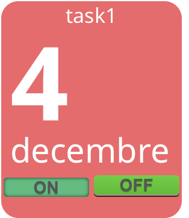

Description
Ce plugin propose d’automatiser les tâches que vous effectuez régulièrement. Apres avoir planifié les tâches (heure et jour de la semaine), elle seront alors exécutées automatiquement et vous pourrez les suivres dans la Timeline du plugin.
il sera alors aisé de programmer l’ouverture de vos volets roulant tous les jours à 7h du matin sauf les WE et jours féries. et cela juste en deux clics.
Figure 1. vue desktop

Figure 2. vue mobile

Figure 3. vue mobile

Figure 4. historique